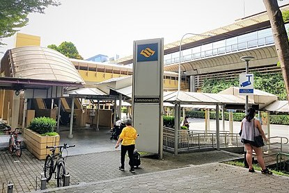
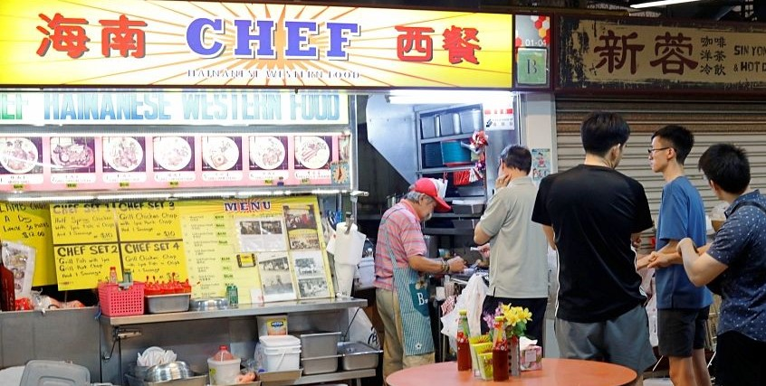
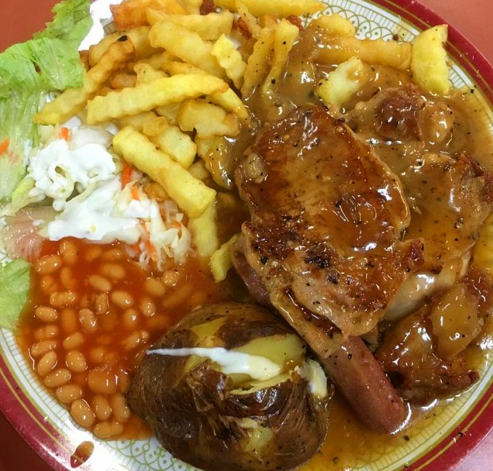
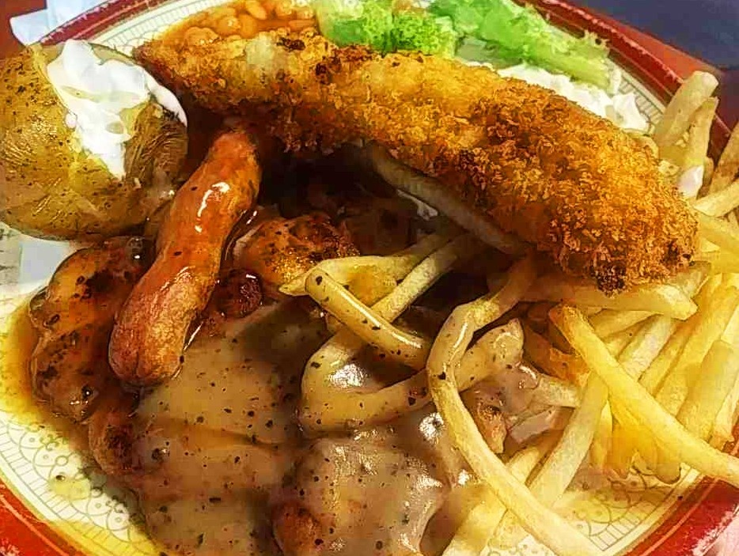
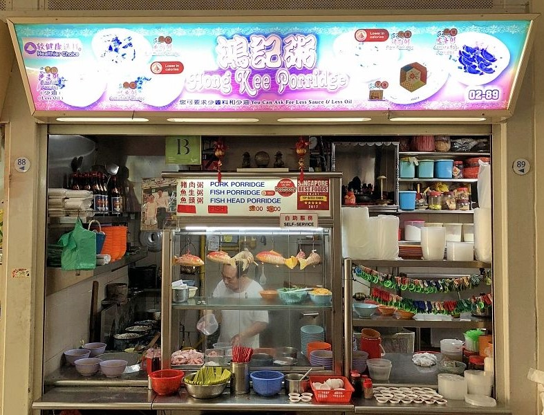
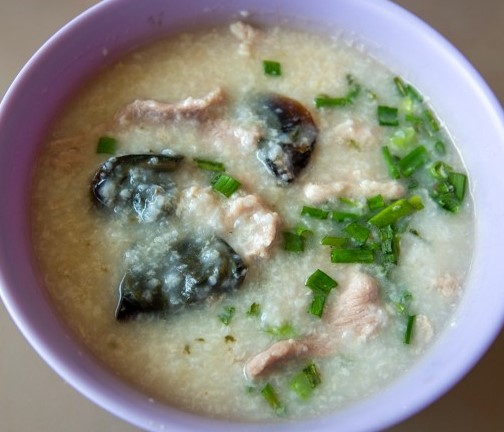
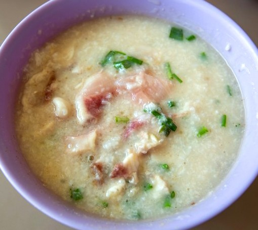

Commonwealth MRT Station is within the vicinity of Tanglin Halt and Commonwealth Crescent. It is one of the oldest satellite town and has many established local eateries, where these "old" establishments still retain their old authentic ways of cooking.
For starter, here are three stalls that has a very long heritage.

Nestled in the Tanglin Halt Food Centre, Chef Hainanese Western Food 海南西餐 is one of the most visited stalls to dabao Hainanese style Western food for dinner, and for a very good reason. While the stall only opens at 7pm or so, you may see a line forming here from 6:30pm or even earlier.
You will find traditional Hainanese style food with authentic Western flavours that are wholesome and filling.

The price is quite affordable, but due to the limited working hours and only dinner time servings, customers are often welcomed by snaking long queues (and yes, please maintain your social distance).
If you are really hungry and love a big portion, the four Chef Sets (priced at $10 each) with various combinations of half spring chicken, grilled chicken, grill fish, pork chop and sausage would satisfy that.

Their Mixed Grill Platters ($10) are very popular, which offers a serving of pork chop, tender chicken chops, fish cutlet and chicken sausage.
Along with the meats, there was a dollop of coleslaw, baked beans, baked potato and crinkle cut fries. It’s a lot for one person, so make sure you bring your appetite with you.
Old-school flavours, generous portion, the only thing holding me back is the long queue and longer wait.
Oh yes, it is only opened 2 hours a day, closed on Thurs.
Hawker Stall Unit #1-04
1A Commonwealth Drive, Singapore 141001.
Google Map:Chef Hainanese Western Food
Opening hours: 7.00pm to 9.00pm
Closed on: Thursday

Hong Kee Porridge is managed by a husband and wife, where he cooks, and she serves the bowls of piping hot porridge to your table. Just like every seasoned hawker, they were not the most amiable unless you are longtime customers. A little brusque and a touch cantankerous were all but endearing traits that makes the hawker culture a whole character on its own.

Hong Kee’s Pork Porridge With Century Egg (S$4) was served in a hefty bowl brimming with chunky quarters of century egg and slivers of pork.

The Sliced Fish Porridge that came with a spread of thinly sliced raw fish on the top that needs to be stirred in the porridge to cook. Thick and smooth, it was a texture you can only get at restaurants. Not to mention, a pleasant blandness that was so characteristic of porridge.
Hawker Stall Unit #2-89
31 Commonwealth Crescent, Singapore 149644.
Google Map:Hong Kee Porridge
Opening hours: 6.00am to 2.30pm daily.
Closed on: -

But it is their Briyani and Curry Rice that are more popular. while the Curry Rice is avaible daily, their Briyani is only available on Fridays, Saturdays and Sundays from 11.30am.

The Mutton Curry rice is $5.50 and comes with two vegetables. The mutton is soft and the curry is thick. Another delight is the Goreng Ikan Kuning, which are so crispy, that you can even finish off its head.
On Briyani days, the queueing can be confusing, as there will be three different queues. So do ask around if you are not sure.
Google Map:Tanglin Halt Roti Prata
Opening hours: 6.30am to 3.00pm
Closed on: Tuesday
More about Tanglin Halt Roti Prata.